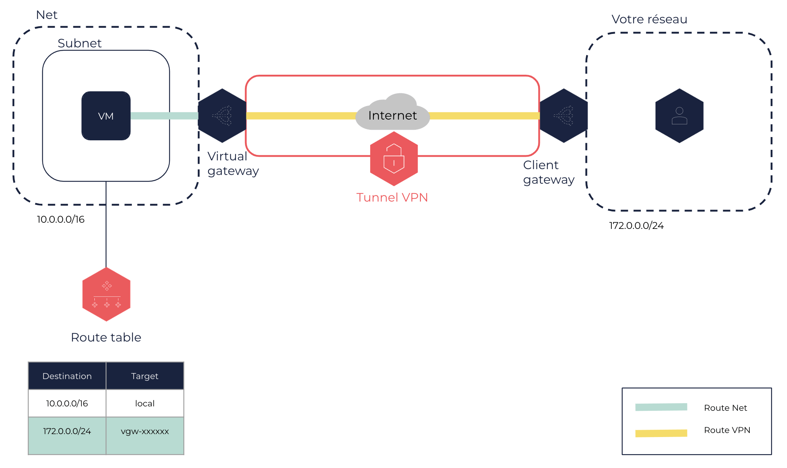
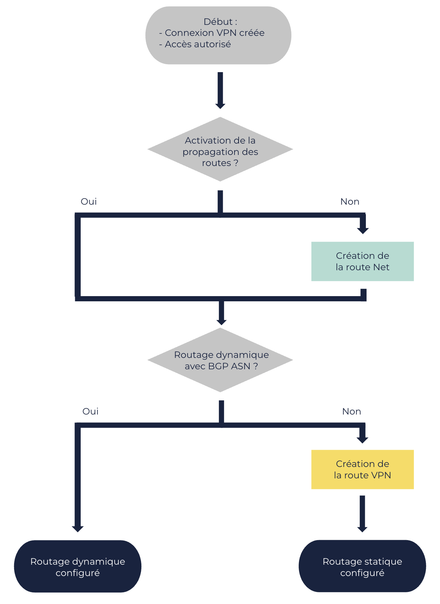

À propos des configurations de routage des connexions VPN
Une connexion VPN utilise deux types de routes que vous devez configurer entre votre réseau d’entreprise et l’un de vos Nets dans le Cloud OUTSCALE.
Types de routes
Une connexion VPN utilise deux types de routes :
-
Routes Net : pour le trafic à l’intérieur du Net, entre les machines virtuelles (VM) et la virtual gateway. Pour obtenir des informations sur ces routes, voir Obtenir des informations sur vos route tables.
-
Routes VPN : pour le trafic à l’intérieur du tunnel VPN, entre la virtual gateway et la client gateway. Pour obtenir des informations sur ces routes, voir Obtenir des informations sur vos connexions VPN.
Ces deux types de routes utilisent le CIDR de votre réseau d’entreprise comme destination, et l’ID de la virtual gateway comme target.

Routages statique et dynamique
Pour autoriser les VM dans votre Net à atteindre la client gateway, vous devez spécifier le type de routage pour la connexion VPN, et actualiser la route table dans le Subnet du Net :
-
Pour le routage statique, vous devez créer de nouvelles routes VPN. Pour en savoir plus, voir Créer une route pour une connexion VPN.
-
Pour le routage dynamique, vous ne devez pas créer de nouvelles routes. Cependant, vous devez utiliser des ressources compatibles avec le Border Gateway Protocol (BGP). Pour en savoir plus, voir la section BGP ASN ci-dessous.
|
Configuration

Propagation des routes
Vous pouvez activer la propagation des routes vers une route table associée à un Subnet du Net. Cette action ajoute automatiquement à la route table les routes du Net pointant vers la virtual gateway. La propagation des routes est facultative, et s’applique au routage statique ou dynamique. Vous pouvez utiliser une route table par défaut ou personnalisée. Pour en savoir plus, voir Activer la propagation des routes.
Sans la propagation des routes, vous devez ajouter manuellement chaque route à la route table. Pour en savoir plus, voir Créer une route.
BGP ASN
Le Border Gateway Protocol (BGP) est un protocole de routage dynamique basé sur les Autonomous System Numbers (ASN). Dans une connexion VPN avec BGP, la client gateway affiche un ASN pour aider la virtual gateway à trouver un chemin vers elle à travers le réseau Internet.
Pour utiliser le BGP, vos ressources doivent être compatibles avec le routage dynamique. L’utilisation du BGP est facultative : vous pouvez choisir le routage statique même si vos ressources sont compatibles avec le routage dynamique.
|
Si vous reliez plusieurs client gateways du même réseau à une même virtual gateway, ces client gateways doivent toutes utiliser le même BGP ASN. |
Sinon, vous devez créer manuellement de nouvelles routes VPN. Pour en savoir plus, voir Créer une route pour une connexion VPN.
Pages connexes